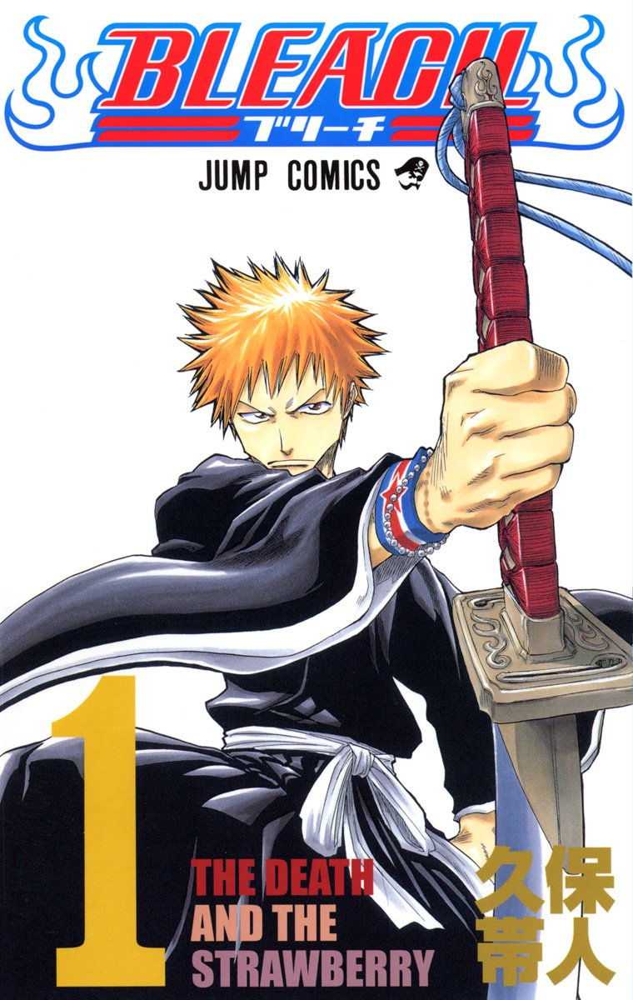

Bleach
Bleach, em inglês (ブリーチ Burīchi?, em japonês) é uma série de mangá escrita e ilustrada pelo
mangaká japonês Tite Kubo, que segue as aventuras de Ichigo Kurosaki que após ganhar os poderes
de um Ceifeiro de Almas (shinigami), através da ceifeira Rukia Kuchiki, sendo então forçado a guiar
as almas boas ao mundo pós-vida Soul Society, e a também derrotar os Hollows
(monstros espirituais malignos) que tentam devorá-las.
